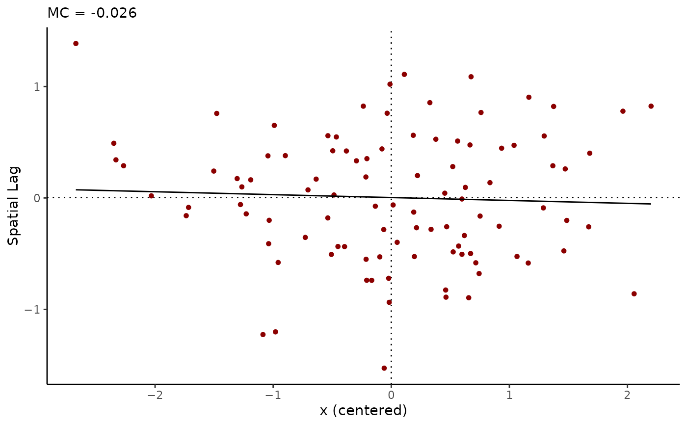

R/geostan_fit-methods.R
resid_geostan_fit.RdExtract model residuals, fitted values, or spatial trend from a fitted geostan_fit model.
A fitted model object of class geostan_fit.
Logical; should the values be summarized by their mean, standard deviation, and quantiles (probs = c(.025, .2, .5, .8, .975)) for each observation? Otherwise, a matrix containing samples from the posterior distributions is returned.
For Poisson and Binomial models, should the fitted values be returned as rates, as opposed to raw counts? Defaults to TRUE; see the Details section for more information.
For auto-normal models (CAR and SAR models with Gaussian likelihood only); if detrend = TRUE, the implicit spatial trend will be removed from the residuals. The implicit spatial trend is Trend = rho * C %*% (Y - Mu) (see stan_car or stan_sar). I.e., resid = Y - (Mu + Trend).
Not used
For auto-normal models (CAR and SAR models with Gaussian likelihood only); if trend = TRUE, the fitted values will include the implicit spatial trend term. The implicit spatial trend is Trend = rho * C %*% (Y - Mu) (see stan_car or stan_sar). I.e., if trend = TRUE, fitted = Mu + Trend.
When rates = FALSE and the model is Poisson or Binomial, the fitted values returned by the fitted method are the expected value of the response variable. The rates argument is used to translate count outcomes to rates by dividing by the appropriate denominator. The behavior of the rates argument depends on the model specification. Consider a Poisson model of disease incidence, such as the following intercept-only case:
If the fitted values are extracted using rates = FALSE, then fitted(fit) will return the expectation of \(y\). If rates = TRUE (the default), then fitted(fit) will return the expected value of the rate \(\frac{y}{E}\).
If a binomial model is used instead of the Poisson, then using rates = TRUE will return the expectation of \(\frac{y}{N}\) where \(N\) is the sum of the number of 'successes' and 'failures', as in:
# \donttest{
data(georgia)
A <- shape2mat(georgia, "B")
fit <- stan_esf(deaths.male ~ offset(log(pop.at.risk.male)),
C = A,
data = georgia,
family = poisson(),
chains = 1, iter = 600) # for speed only
#>
#> *Setting prior parameters for intercept
#> Distribution: normal
#> location scale
#> 1 -4.2 5
#>
#> *Setting prior for eigenvector coefficients
#> Distribution: hs
#> global_scale slab_df slab_scale
#> 1 1 15 1.6
#>
#> SAMPLING FOR MODEL 'foundation' NOW (CHAIN 1).
#> Chain 1:
#> Chain 1: Gradient evaluation took 0.000112 seconds
#> Chain 1: 1000 transitions using 10 leapfrog steps per transition would take 1.12 seconds.
#> Chain 1: Adjust your expectations accordingly!
#> Chain 1:
#> Chain 1:
#> Chain 1: Iteration: 1 / 600 [ 0%] (Warmup)
#> Chain 1: Iteration: 301 / 600 [ 50%] (Sampling)
#> Chain 1: Iteration: 600 / 600 [100%] (Sampling)
#> Chain 1:
#> Chain 1: Elapsed Time: 7.873 seconds (Warm-up)
#> Chain 1: 3.226 seconds (Sampling)
#> Chain 1: 11.099 seconds (Total)
#> Chain 1:
#> Warning: Bulk Effective Samples Size (ESS) is too low, indicating posterior means and medians may be unreliable.
#> Running the chains for more iterations may help. See
#> https://mc-stan.org/misc/warnings.html#bulk-ess
# Residuals
r <- resid(fit)
moran_plot(r$mean, A)

head(r)
#> mean sd 2.5% 20%
#> residual[1] 0.0004228774 0.0007568898 -0.0010399674 -0.0002305931
#> residual[2] 0.0067648468 0.0008204100 0.0051641535 0.0060854032
#> residual[3] 0.0036931791 0.0002603768 0.0031874184 0.0034968055
#> residual[4] -0.0001261844 0.0001795765 -0.0004708012 -0.0002660678
#> residual[5] -0.0051860844 0.0003839722 -0.0058835815 -0.0055187370
#> residual[6] -0.0021648283 0.0001577689 -0.0024603932 -0.0022993095
#> 50% 80% 97.5%
#> residual[1] 0.0004725685 1.060680e-03 0.0018042667
#> residual[2] 0.0068186946 7.424076e-03 0.0082735010
#> residual[3] 0.0036844451 3.904423e-03 0.0042543586
#> residual[4] -0.0001242065 3.062659e-05 0.0002187939
#> residual[5] -0.0052005200 -4.836316e-03 -0.0044717752
#> residual[6] -0.0021644352 -2.027720e-03 -0.0018473525
# Fitted values
f <- fitted(fit)
# Fitted values, unstandardized
f <- fitted(fit, rates = FALSE)
head(f)
#> mean sd 2.5% 20% 50% 80%
#> fitted[1] 105.9075 5.535135 95.80540 101.24325 105.54411 110.68633
#> fitted[2] 55.1945 2.887023 49.88555 52.87468 55.00501 57.58547
#> fitted[3] 217.7359 5.376780 206.14749 213.37366 217.91621 221.79097
#> fitted[4] 2098.4351 34.774274 2031.63143 2068.06928 2098.05209 2125.52297
#> fitted[5] 538.9150 16.208236 508.76257 524.15057 539.52435 552.95693
#> fitted[6] 2157.6033 33.203570 2090.78827 2128.74780 2157.52053 2185.90577
#> 97.5%
#> fitted[1] 116.60528
#> fitted[2] 60.82734
#> fitted[3] 228.17981
#> fitted[4] 2165.16878
#> fitted[5] 568.35774
#> fitted[6] 2219.80698
# Spatial trend
esf <- spatial(fit)
head(esf)
#> mean sd 2.5% 20% 50% 80%
#> esf[1] -0.05004214 0.05132417 -0.14683329 -0.09449396 -0.05302229 -0.004475991
#> esf[2] 0.02972777 0.05089428 -0.06828551 -0.01142740 0.02771313 0.072899446
#> esf[3] -0.36633652 0.02508781 -0.42200171 -0.38507757 -0.36565743 -0.345076291
#> esf[4] -0.33882060 0.01695998 -0.37119490 -0.35296258 -0.33924505 -0.325110764
#> esf[5] -0.17519720 0.02994772 -0.23297883 -0.20105418 -0.17271400 -0.151051674
#> esf[6] -0.39424578 0.01547543 -0.42439002 -0.40799961 -0.39386979 -0.381810749
#> 97.5%
#> esf[1] 0.04731729
#> esf[2] 0.13003804
#> esf[3] -0.31806491
#> esf[4] -0.30351409
#> esf[5] -0.11838437
#> esf[6] -0.36289224
# }